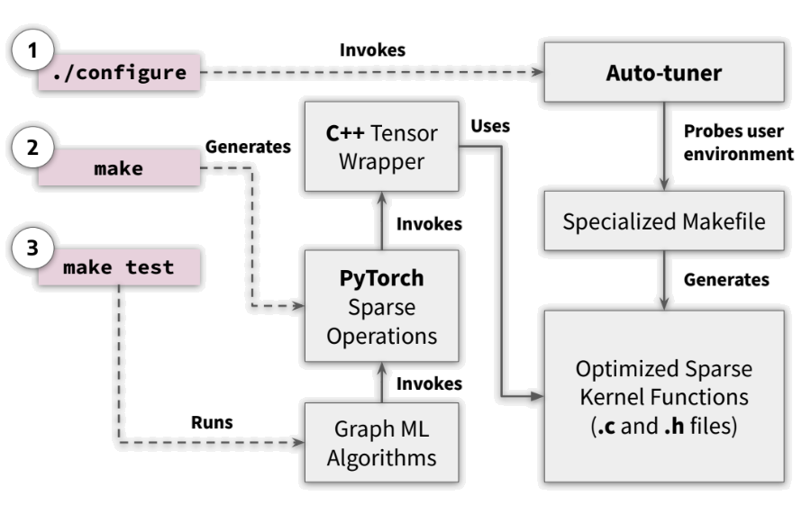

iSpLib - An Intelligent Sparse Library
iSpLib is an accelerated sparse kernel library with PyTorch interface. This library has an auto-tuner which generates optimized custom sparse kernels based on the user environment. The goal of this library is to provide efficient sparse operations for Graph Neural Network implementations. Currently it has support for CPU-based efficient Sparse Dense Matrix Multiplication (spmm-sum only) with autograd.

System Requirements
Users need to have the following software/tools installed in their PC/server. The source code was compiled and run successfully in Linux (Ubuntu and Centos distributions).
Make >= 4.4
GCC >= 10.1 (Support for C++ >= 14)
OpenMP >= 4.5
Python >= 3.7
NumPy >= 1.21 (Or, Anaconda environment)
Installation
To install the package, run the following commands:
git clone https://github.com/ICICLE-ai/iSpLib.git: To clone this repository../configure: To download and run the auto-tuner. This is a pre-requisite for the installation.- Create a virtualenv as the packages might conflict.
- Install the dependencies
pip install torch torchvision scikit-learn torch-scatter. make: To install the library.- Finally install custom version of torch-geometric
pip install git+https://github.com/gamparohit/pytorch_geometric.git
Troubleshoot
- If
makecommand exits with unknown error message, try runningpip3 install -e .instead. - If you are having trouble installing torch-scatter, install it with -f flag and torch version.
import torch
print(torch.__version__)
!pip install torch-scatter -f https://data.pyg.org/whl/torch-{torch.__version__}.html
Convention and Usage
The current iSpLib has both regular and optimized SpMM operation for comparison purpose. The default operation is non-optimized. To use the optimized version, use the following code snippet for running the GNN model:
import builtins
builtins.FUSEDMM = True
FusedMM method is used as the optimized sparse kernel and it is generated when ./configure command is run. See details here: FusedMM Method.
Note: If you are not using the optimized kernel, you will still have to explicitly mention builtins.FUSEDMM = False in the code, otherwise it will raise an error.
Performance and Testing
When compared to PyTorch Sparse, a 2-layer GCN implemention with 10 epochs is typically-
- 2.5x faster on Cora dataset
- 2x faster on Reddit dataset
[Note: The speed-up varies largly depending on the system condition]
To run the test code, use the command: make test. This runs the python script in tests/GCN.py and prints out the speed-up along with the accuracy. See tests/Expected_GCN_output.txt for reference.
SpMM Example
The SpMM operation can also be used directly to multiply two compatible matrices. Following is an example of a sparse and dense matrix multiplication:
import builtins
from isplib.matmul import *
from isplib.tensor import SparseTensor
from scipy.sparse import coo_matrix
import torch
index = torch.tensor([[0, 0, 1, 2, 2],
[0, 2, 1, 0, 1]])
value = torch.Tensor([1, 2, 4, 1, 3])
matrix = torch.Tensor([[90, 4], [2, 5], [3, 6]])
a = SparseTensor.from_scipy(coo_matrix((value, index), shape=(3, 3)))
b = matrix
builtins.FUSEDMM = True
print(spmm_sum(a, b))
License
iSpLib is licensed under the https://opensource.org/licenses/BSD-3-Clause
Acknowledgements
This work has been funded by grants from the National Science Foundation, including the ICICLE AI Institute (OAC 2112606)